-
Frodo
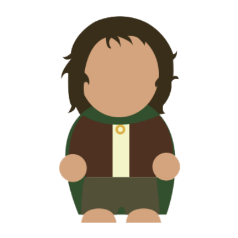Event: Use the One Ring to turn invisible and avoid one drink per night (owner cannot target again). Can request favors from Smeagol, but not Gollum.
Passives: Play ledger with Sting for 2x points; must always carry the One Ring on his person (necklace preferred).
Line: When all hope is lost, must use line "I can't recall the taste of food." -
Samwise
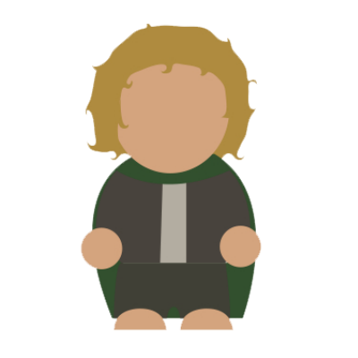Event: May borrow the One Ring for personal use once per evening.
Passives: Must carry loaf of Lembas bread at all times (up to interpretation); revive Frodo with Lembas bread if he boots. Fart as much as possible.
Line: When on an epic comeback, must use line "And that's for my old gaffer!" -
Pippin
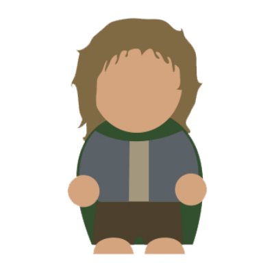Event: May push a drink off table to avoid drinking once per evening (everyone shouts "Fool of a took!" and can ruffle his hair).
Passives: Lead in the cooking of breakfast the entire weekend - lots of bacon. Must smoke too much.
Line: Must reenact the following scene once (help from Merry, Aragorn). -
Merry
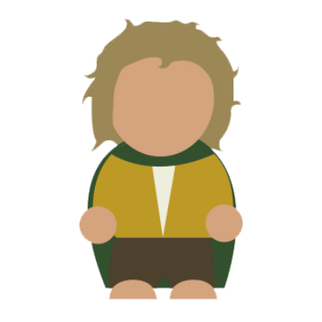Event: Can crawl up and stab someone in the back of the calf with Fireball nip once per evening.
Passives: Lead in the cooking of breakfast the entire weekend. Must supply longbottom leaf (tobacco) for others.
Line: Must use line "You smoke too much, Pip!" -
Legolas
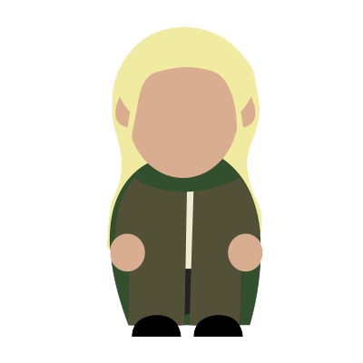Event: Once per evening: If you win a game and score more points than Gimli, may Elvish Challenge opponent to a wine chugoff (10oz) - if you win, loser must repeat deed.
Passives: Must shower twice per day (not optional), wear pastels and bleach hair (or attempt to with lemon juice). May not eat meat or fart all weekend.
Line: Must use line "Natha daged dhaer!" -
Gimli
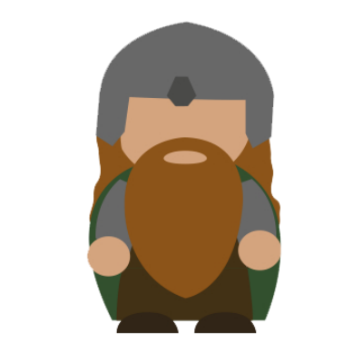Event: Once per evening: If you win a game and score more points than Legolas, may Dwarven Challenge opponent to a mead chugoff (6oz) - if you win, loser must repeat deed.
Passives: May not shower (not optional). May not eat vegetables all weekend.
Line: Must use line "Nobody tosses a dwarf!" -
Gollum / Smeagol
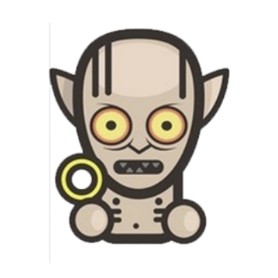Event (Gollum): May try to wrest/steal the One Ring from Frodo once per evening. If successful, keep ring and use it once to make Frodo take a shot; if you fail, Frodo leashes you for 10 minutes.
Passives: Obey all Frodo's reasonable commands until deemed too drunk by Sam - morph into Gollum. Cavort about on all fours; wear boxers/loincloth or little clothing as appropriate.
Line: Must use line "What's taters precious?" during a meal. -
Shelob
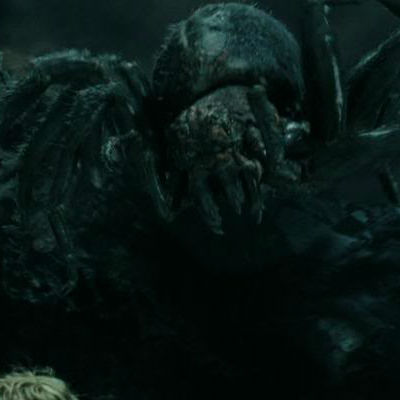Event: Once per evening: Can attempt to kancho Frodo. If successful, Frodo is "stung" and must take a 10-minute nap under table with shirt off; if you fail, must retreat into bathroom and hermit beer.
Passives: Must always try to turn lights off and move between games on all fours. Must sleep in garage or coat room one night.
Line: Must use line "SKCSKCSCHSCHSCHfsshhshschsksch..." -
Saruman the White
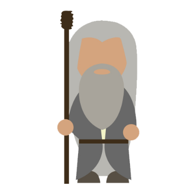Event: Can swap ledger paddles at will with anyone once per evening, claiming their staff (cannot take Sting). May use a Fireball nip against a "good" hero.
Passives: Must wear white glove during all drinking games on non-dominant hand; must always hold beer in that hand.
Line: Must use line "Send out your warg riders!" or "TO WARRR!" -
Grima Wormtongue
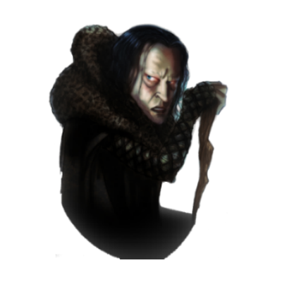Event: Can cheat death and escape one drink once per evening by snivelling and grovelling a lot - must kiss someone's hand and roll around for general amusement (use first line).
Passives: Must never cheerleader pizza or other greasy foods; must pour bacon grease on eggs for breakfast. Must recite one creepy poem.
Line: Must use lines "I've only ever served you, my lord" and "How can fire undo stone?" when contemplating a Fireball shot / someone gets on fire during Ruit.
 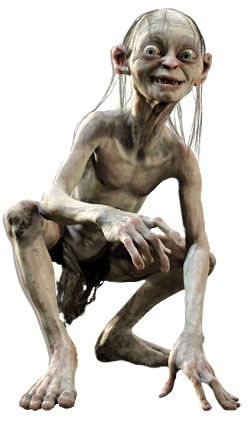
It came to me...
My own...
My love...
My PRECIOUSSSsss...
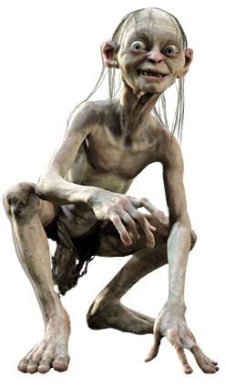
It came to me...
My own...
My love...
My PRECIOUSSSsss...